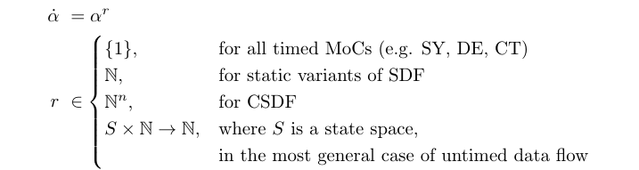
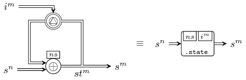
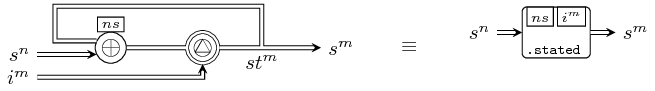
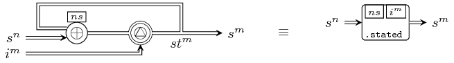
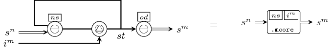

| Copyright | (c) George Ungureanu KTH/ICT/ESY 2015 |
|---|---|
| License | BSD-style (see the file LICENSE) |
| Maintainer | ugeorge@kth.se |
| Stability | experimental |
| Portability | portable |
| Safe Haskell | Safe |
| Language | Haskell2010 |
| Extensions |
|
ForSyDe.Atom.MoC
Description
This module exports the core entities of the MoC layer: interfaces for atoms and process constructors as patterns of atoms. It does NOT export any implementation or instantiation of any specific MoC.
Current MoC implementations can be used by importing their respective modules:
IMPORTANT!!! see the naming convention rules on how to interpret, use and develop your own constructors.
Atoms
class Applicative e => MoC e where Source #
This is a type class defining interfaces for the MoC layer atoms. Each model of computation exposes its tag system through a unique event constructor as an instance of this class, which defines T × V.
To express all possible MoCs which can be described using a tagged signal model we need to capture the most general form of their atoms. Recall that all atoms in the layered framework are represented as higher-order functions on structured types (instances of this class), taking functions of other (lower) layers as arguments. While this principle stands also for this layer, the functions taken as arguments need to be formatted for each MoC in particular in order to capture additional information, which we can call in general terms as the execution context.
One typical example of additional information is the consumption and production rates of for data flow MoCs (e.g. SDF). In this case the passed functions are defined over "partitions" of events, i.e. groupings of events with the same partial order in relation to, for example, a process firing. The formal description of such a "formatted function" taken as argument by a MoC entity is:
where a and b might be Cartesian products of different types, corresponding to how many signals the constructor is applied to or how many signals it yields, and each type is expressed as:

While, as you can see above, the execution context can be extracted
from the type information, working with type-level parameters is
not a trivial task in Haskell, especially if we want to describe a
general and extensible type class. This is why we have chosen a
pragmatic approach in implementing the MoC class:
- any (possible) Cartesian product of α is represented using a recursive type, namely a list [α].
- as the execution context cannot (or can hardly) be extracted from
the recursive type, in the most general case we pass both context
and argument as a pair (see each instance in particular). To aid
in pairing contexts with each argument in a function, the
ctxtutilities are provided (seectxt22). - this artifice was masked using the generic type families
FunandRes.
Associated Types
This is a type family alias for a context-bound function passed
as an argument to a MoC atom. In the most simple case it can be
regarded as an enhanced -> type operator. While hiding the
explicit definition of arguments, this implementation choice
certainly has its advantages in avoiding unnecessary or redundant
type constructors (see version 0.1.1 and prior). Aliases are
replaced at compile time, thus not affecting run-time
performance.
Methods
(-.-) :: Fun e a b -> Stream (e a) -> Stream (e b) infixl 5 Source #
This atom is mapping a function on values (in the presence of a context) to a signal, i.e. stream of tagged events. As ForSyDe deals with determinate, functional processes, this atom defines the (only) behavior of a process in rapport to one input signal [Lee98].
(-*-) :: Stream (e (Fun e a b)) -> Stream (e a) -> Stream (e b) infixl 5 Source #
This atom synchronizes two signals, one carrying functions on values (in the presence of a context), and the other containing values, during which it applies the former on the latter. As concerning the process created, this atom defines a relation between two signals [Lee98].
(-*) :: Stream (e (Ret e b)) -> Stream (e b) infixl 3 Source #
Artificial utility which drops the context and/or partitioning yielding a clean signal type.

(-<-) :: Stream (e a) -> Stream (e a) -> Stream (e a) infixl 3 Source #
This atom appends a (partition of) events at the beginning of a signal. This atom is necessary to ensure complete partial order of a signal and assures the least upper bound necessary for example in the evaluation of feedback loops [Lee98].
Notice the difference between the formal and the implemented type signatures. In the implementation the value/partition is wrapped inside an event type to enable smooth composition. You might also notice the type for the "initial event(s)" as being wrapped inside a signal constructor. This allows defining an DSL for this layer which is centered around signals exclusively, while also enabling to define atoms as homomorphisms to certain extent [Bird97]. Certain MoCs might have additional constraints on the first operand to be finite.
(-&-) :: Stream (e a) -> Stream (e a) -> Stream (e a) infixl 3 Source #
This atom allows the manipulation of tags in a signal in a restrictive way which preserves monotonicity and continuity in a process [Lee98], namely by “phase-shifting” all tags in a signal with the appropriate metric corresponding to each MoC. Thus it preserves the characteristic function intact [Sander04].
As with the -<- atom, we can justify the type signature for
smooth composition and the definition of atoms as homomorphisms
to certain extent. This in turn allows the interpretation of the
-&- operator as "aligning the phases" of two signals: the
second operand is aligned based on the first.
Instances
| MoC SY Source # | Implenents the execution and synchronization semantics for the SY MoC through its atoms. |
Defined in ForSyDe.Atom.MoC.SY.Core Methods (-.-) :: Fun SY a b -> Stream (SY a) -> Stream (SY b) Source # (-*-) :: Stream (SY (Fun SY a b)) -> Stream (SY a) -> Stream (SY b) Source # (-*) :: Stream (SY (Ret SY b)) -> Stream (SY b) Source # (-<-) :: Stream (SY a) -> Stream (SY a) -> Stream (SY a) Source # (-&-) :: Stream (SY a) -> Stream (SY a) -> Stream (SY a) Source # | |
| MoC SDF Source # | Implenents the SDF semantics for the MoC atoms |
Defined in ForSyDe.Atom.MoC.SDF.Core Methods (-.-) :: Fun SDF a b -> Stream (SDF a) -> Stream (SDF b) Source # (-*-) :: Stream (SDF (Fun SDF a b)) -> Stream (SDF a) -> Stream (SDF b) Source # (-*) :: Stream (SDF (Ret SDF b)) -> Stream (SDF b) Source # (-<-) :: Stream (SDF a) -> Stream (SDF a) -> Stream (SDF a) Source # (-&-) :: Stream (SDF a) -> Stream (SDF a) -> Stream (SDF a) Source # | |
| MoC DE Source # | Implenents the execution and synchronization semantics for the DE MoC through its atoms. |
Defined in ForSyDe.Atom.MoC.DE.Core Methods (-.-) :: Fun DE a b -> Stream (DE a) -> Stream (DE b) Source # (-*-) :: Stream (DE (Fun DE a b)) -> Stream (DE a) -> Stream (DE b) Source # (-*) :: Stream (DE (Ret DE b)) -> Stream (DE b) Source # (-<-) :: Stream (DE a) -> Stream (DE a) -> Stream (DE a) Source # (-&-) :: Stream (DE a) -> Stream (DE a) -> Stream (DE a) Source # | |
| MoC CT Source # | Implenents the execution and synchronization semantics for the CT MoC through its atoms. |
Defined in ForSyDe.Atom.MoC.CT.Core Methods (-.-) :: Fun CT a b -> Stream (CT a) -> Stream (CT b) Source # (-*-) :: Stream (CT (Fun CT a b)) -> Stream (CT a) -> Stream (CT b) Source # (-*) :: Stream (CT (Ret CT b)) -> Stream (CT b) Source # (-<-) :: Stream (CT a) -> Stream (CT a) -> Stream (CT a) Source # (-&-) :: Stream (CT a) -> Stream (CT a) -> Stream (CT a) Source # | |
Process constructors
Process constructors are defined as patterns of MoC atoms. Check the naming convention of the API in the page description.

Arguments
| :: MoC e | |
| => Fun e a1 (Fun e a2 (Ret e b1, Ret e b2)) | combinational function (*) |
| -> Stream (e a1) | first input signal |
| -> Stream (e a2) | second input signal |
| -> (Stream (e b1), Stream (e b2)) | two output signals |
(*) to be read a1 -> a2 -> (b1, b2) where each
argument and result might be individually wrapped with a context
and might also express a partition.

The comb processes takes care of synchronization between signals
and maps combinatorial functions on their event values.
This library exports constructors of type comb[1-8][1-4].
Arguments
| :: MoC e | |
| => Stream (e (Fun e a1 (Fun e a2 (Ret e b1, Ret e b2)))) | signal carrying functions (*) |
| -> Stream (e a1) | first input signal |
| -> Stream (e a2) | second input signal |
| -> (Stream (e b1), Stream (e b2)) | two output signals |
(*) to be read a1 -> a2 -> (b1, b2) where each
argument and result might be individually wrapped with a context
and might also express a partition.


The reconfig processes constructs adaptive processes, where the
first signal carries functions, and it is synchronized with all the
other signals.
This library exports constructors of type reconfig[1-8][1-4].
Arguments
| :: MoC e | |
| => Fun e st1 (Fun e st2 (Fun e a1 (Fun e a2 (Ret e st1, Ret e st2)))) | next state function (*) |
| -> (Stream (e st1), Stream (e st2)) | initial state(s) (**) |
| -> Stream (e a1) | first input signal |
| -> Stream (e a2) | second input signal |
| -> (Stream (e st1), Stream (e st2)) | output signals mirroring the next state(s). |
(*) meaning st1 -> st2 -> a1 -> a2 -> (st1,st2)
where each argument and result might be individually wrapped
with a context and might also express a partition.
(**) see the documentation for -<- for justification
of the type

The state processes generate process networks corresponding to a
simple state machine like in the graph above.
This library exports constructors of type state[1-4][1-4].
Arguments
| :: MoC e | |
| => Fun e st1 (Fun e st2 (Fun e a1 (Fun e a2 (Ret e st1, Ret e st2)))) | next state function (*) |
| -> (Stream (e st1), Stream (e st2)) | initial state(s) (**) |
| -> Stream (e a1) | first input signal |
| -> Stream (e a2) | second input signal |
| -> (Stream (e st1), Stream (e st2)) | output signals mirroring the next state(s). |
(*) meaning st1 -> st2 -> a1 -> a2 -> (st1,st2)
where each argument and result might be individually wrapped
with a context and might also express a partition.
(**) see the documentation for -<- for justification
of the type
 

The state processes generate process networks corresponding to a
simple state machine like in the graph above. The difference
between state22 and stated22 is that the latter outputs the
current state rather than the next one. There exists a variant with
0 input signals, in which case the process is a signal
generator.
This library exports constructors of type stated[0-4][1-4].
Arguments
| :: MoC e | |
| => Fun e st (Fun e a1 (Fun e a2 (Ret e st))) | next state function (*) |
| -> Fun e st (Ret e b1, Ret e b2) | output decoder (**) |
| -> Stream (e st) | initial state (***) |
| -> Stream (e a1) | first input signal |
| -> Stream (e a2) | second input signal |
| -> (Stream (e b1), Stream (e b2)) | output signals |
(*) meaning st -> a1 -> a2 -> st where each
argument and result might be individually wrapped with a context
and might also express a partition.
(**) meaning st -> (b1, b2) where each argument
and result might be individually wrapped with a context and might
also express a partition.
(***) see the documentation for -<- for justification
of the type

The moore processes model Moore state machines.
This library exports constructors of type moore[1-4][1-4].
Arguments
| :: MoC e | |
| => Fun e st (Fun e a1 (Fun e a2 (Ret e st))) | next state function (*) |
| -> Fun e st (Fun e a1 (Fun e a2 (Ret e b1, Ret e b2))) | output decoder (**) |
| -> Stream (e st) | initial state (***) |
| -> Stream (e a1) | first input signal |
| -> Stream (e a2) | second input signal |
| -> (Stream (e b1), Stream (e b2)) | output signals |
(*) meaning st -> a1 -> a2 -> st where each
argument and result might be individually wrapped with a context
and might also express a partition.
(**) meaning st -> a1 -> a2 -> (b1, b2) where
each argument and result might be individually wrapped with a
context and might also express a partition.
(***) see the documentation for -<- for justification
of the type


The mealy processes model Mealy state machines.
This library exports constructors of type mealy[1-4][1-4].
Utilities
Arguments
| :: (ctx, ctx) | argument contexts (e.g. consumption rates in SDF) |
| -> (ctx, ctx) | result contexts (e.g. production rates in SDF) |
| -> (a1 -> a2 -> (b1, b2)) | function on values/partitions of values |
| -> (ctx, a1 -> (ctx, a2 -> ((ctx, b1), (ctx, b2)))) | context-wrapped form of the previous function |
Wraps a function with the context needed by some MoCs for their constructors (e.g. rates in SDF).
This library exports wrappers of type ctxt[1-8][1-4].
warg :: c -> (a -> b) -> (c, a -> b) Source #
Attaches a context parameter to a function argument (e.g
consumption rates in SDF). Used as kernel function in defining
e.g. ctxt22.